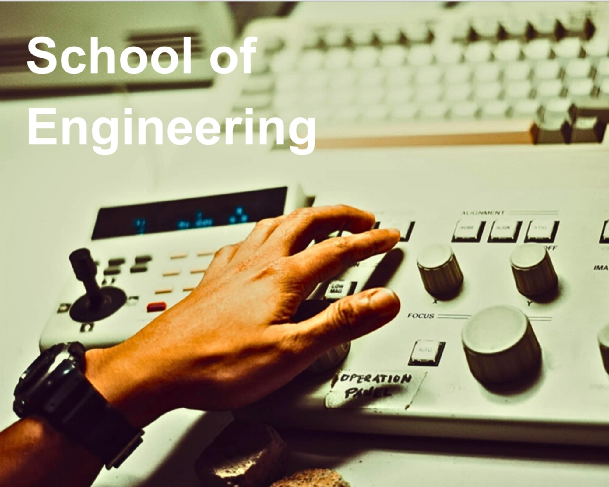

Schools
Schools
The University is made up of twelve degree-granting, academic schools. While each school has its own
personality and area of expertise,
they frequently work together to offer interdisciplinary degree
programs and undertake complex research.

